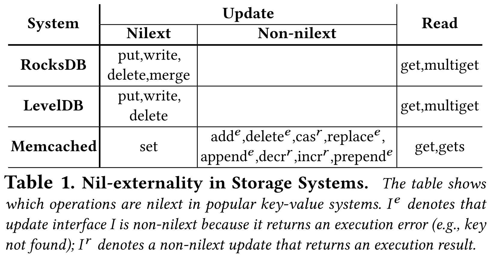

본 글은 논문 Exploiting Nil-Externality for Fast Replicated Storage (SOSP '21) 를 읽고 정리한 글입니다.
별도의 명시가 없는 한, 본 글의 모든 그림은 위 논문에서 가져왔습니다.
목차
2.1. Nil-externality
- Nil-externality 라는 것은 interface 의 특성으로 만약에 어떤 interface 가 Nil-external 하다는 것은 해당 operation 이 storage 의 상태를 노출시키지 않는다는 것을 뜻한다.
- 여기서 “상태를 노출시키지 않는다” 라는 것은 단순히 storage 에 저장된 값만을 의미하는 것이 아닌, 실행 결과 혹은 에러도 노출하지 않는다라는 것이다.
- 그냥 storage 가 request 를 인지했다는 의미에서의 ACK 정도만이 응답으로 올 수 있다.
- 이러한 Nil-external 한 operation 들은 storage 의 상태를 바꿀 수 있다.
- 간단하게 말하면, 해당 operation 이 데이터를 저장하기도 한다는 것.
- 사실 Nil-external 한 operation 대부분이 write operation 이긴 하다.
- 또한, Nil-external 한 operation 이 Validation error 는 응답으로 줄 수 있다.
- 즉, request parsing error 같은 것은 가능하다는 것.
- 왜냐면 이건 storage 의 상태를 노출시키는 것이 아니기 때문이다.
- 뭐 HTTP 로 비유하면
4xx번대 client-side error 는 가능하다고 이해하면 된다.
- 어떤 operation 이 Nil-external 한지 판단하는 것은 아주 간단하다.
- 당연히 interface 의 특성이기 때문에 interface spec document 를 보고 return value 및 error 가 어떤 것이 있는지만 확인하면 된다.
- 또한, static 한 속성이기 때문에 현재 system 의 상태, 혹은 request parameter 에 의존하지 않는다.
- 가령 system 이 어떤 상태일때는 에러 없이 상태를 노출시키지 않지만, 만약 다른 상태일 때는 execution error 가 발생한다면, 그것은 Nil-external 하지 않은 것.
2.2. Nil-externality in Storage Systems
NXSECTION
- 여기
2.2.x.section 은 논문에는 없는 section 임다.
2.2.1. RocksDB, LevelDB, Memcached Example
- 간단하게, RocksDB, LevelDB, Memcached 세개의 KV Store 을 보면서 어떤 interface 가 Nil-externality 를 가지는지 확인해 보자.
- 왜 얘네들이냐… 라고 한다면 워낙에 많이 사용되는 애들이기도 하고, 따라서 얘네들에 대해 Nil-externality 를 식별하고 최적화한다면 많은 파급력이 있을 것이기 때문.

- 일단 RocksDB 와 LevelDB 는 모두 LSM tree 이고 따라서 비슷한 특성을 가진다.
PUT,WRITE(multi-put): insert 만 하고 그 결과는 노출하지 않는다. (Nilext)DELETE: 만약 key 가 없을때 error 를 내뿜도록 한다면 또 모르겠지만, LSM 에서 이것은 단순히 해당 key 에 tombstone value 를 insert 하는 식으로 구현된다. (Nilext)MERGE: 얘는 RocksDB 에만 있는놈인데, RMW (Read-Modify-Write) 작업을 한다.- 근데 RocksDB 에서는 이놈조차 insert 로 처리한다.
- 이것을 Upsert 라고 하는데, key 에 대한 값을 변형할 함수 를 의 value 로 insert 한다 (
k := F()). - First-class function 이라고 생각하면 되니라.
- 따라서 이놈도 Nilext 하다.
GET,MULTIGET: 이놈이 Nilext 하다면 그게 더 이상하다.
- 그리고 Memcached 같은 경우에는 좀 다르다.
- 여기서는
SET만을 제외한 모든 operation 이 Nilext 가 아니다. - 근데 Section 3.3. 에서 말하겠지만, Memcached 에서는
SET만이 지배적으로 사용되고, 나머지 write operation 들은 거의 사용되지 않기 때문에, Nilext 한 interface 가 적다고 해서 별로 걱정하지는 않아도 된다.
- 여기서는
2.2.2. General Classification
- 반복적으로 말하고 있지만, Nilext 한 애들은 ordering, execution 작업을 defer 할 수 있기 때문에 빠르게 작동할 수 있다.
- 그럼 이런 Nilext 한 애들은 어떤 것이 있는지 좀 더 general 하게 생각해 보자.
- 일단 storage operation 은 크게 (1) Read, (2) Write, (3) RMW 로 나눌 수 있다.
- 당연히 (1) Read 는 Nilext 가 아니다.
- (2) Write 의 경우에는 return value (+ error) 가 뭐냐에 따라 Nilext 할 수도, 아닐 수도 있다.
- 위에서 본 것처럼, (3) RMW 의 경우에도 (RocksDB 의
MERGE를 생각해 보면) Nilext 할 수도, 아닐 수도 있다.
2.2.3. Considerations
- 근데 Nilext 에서 execution 을 defer 해버리면 execution error 가 즉각적으로 respond 되지 않는 문제가 있다.
- 가령 뭐 disk 에 공간이 부족하다는 등.
- 하지만, Nilext 의 장점을 누리면서 이런 문제점을 해결하는 것이 가능하다.
- 이건 Section 4.8. 에서 다뤄보자.
- 또한 Nilext 가 주는 장점들이 있기 때문에, 가능하다면 non-Nilext operation 들을 Nilext 하게 변형하는 것도 도움이 된다.
- 가령 execution error 가 굳이 필요하지 않다면, 해당 interface 를 execution error 를 return 하지 않도록 변형하여 사용할 수 있을 것이다.